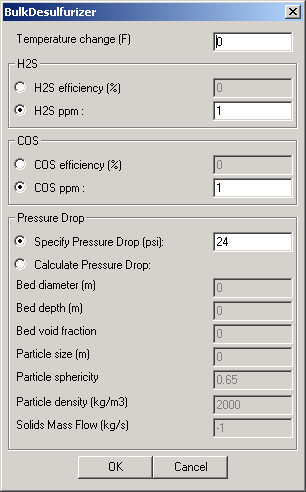
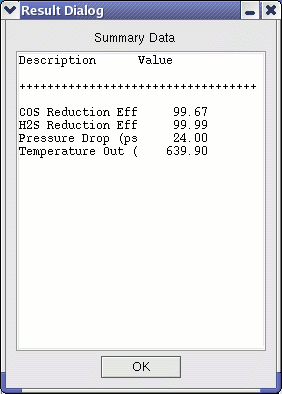

|  | This user interface first allows the user to specify the change in temperature of the gas through the module--thereby accounting for heat effects. Positive values represent an increase of temperature in the gas between inlet and outlet ports. (Note that the temperature change is measured in degrees Fahrenheit) H2S and COS removal calculations can be made either by specifying the desired removal efficiencies or by specifying the desired exit concentrations. Pressure drop across the module can either be specified (in psi) or computed within the module. If the exit concentration is specified, the value should be below that of the inlet. The calculated pressure drop is based on the Ergun equation, with terms to account for the static head pressure drop (pressure lost in suspending the solid particles,) and the wall friction. Void fraction is defined as 1 - sorbent volume / bed volume. The particle size can be computed as the diameter of a sphere of the same volume as the particle. The sphericity is the surface area of the sphere described above divided by the actual particle surface area. Default values are provided for temperature drop, exit acid gas concentrations, specified pressure drop, and particle density and sphericity (for the computed pressure drop option). |
|  | After the module has executed, the Summary Data button provides summary information. The module outputs exit gas temperature, pressure drop, and reduction efficiencies. |